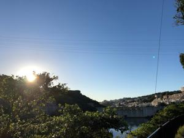
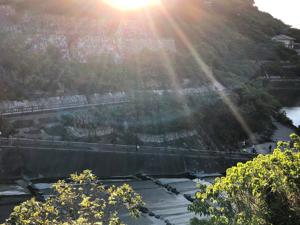

うるがいの話 ある日
最新: マジでヤバイ状況
うるがいとは 前提知識です
カニの画像をクリックすると『うるがいの話』サイトを表示します
うるがい(ｳﾙｶﾞｲ urugai)とは、『もずくがに』の名前でとても大きくなります。
たながー（ﾀﾅｶﾞｰtanagaa）とは手長えびのことで、何種類かあり大きいのは車 エビぐらいになります。
ぶながー(bunagaa)とは、赤い髪の毛、赤い身体、そして身長は１ｍ２０ｃｍ ぐらい、川の蟹を食べているの目撃された。場所は沖縄県国頭郡大宜味村のと ある村僕の隣近所に住んでいる爺さんから、聞いた話です。
2021年07月31日 (土）
マジでヤバイ状況
22:55


「沖縄県内で４３９人の感染確認」！、おおお！、本当にヤバイ。那覇市立図
書館に予約していた本をとりに来いと、おとといメール連絡があった。県立図
書館は既に閉館して入れないが、市立は入れる状態だった。昨日、緊急事態宣
言が８月末に延長されたので、那覇市立図書館のホームページを確認する。な
んと、今日を最後に那覇市立図書館も閉館するとあった。急いで、予約の本を
取りにいく。図書館を利用する暇人達も辛い、仕方ない。ところで取りに行っ
た本とは『本気で学ぶLinux実践入門 サーバ運用のための業務レベル管理術
CentOS&Ubuntu対応』、６月に予約していたが、前の借り入れた人の返本が
宣言で遅くなったため。